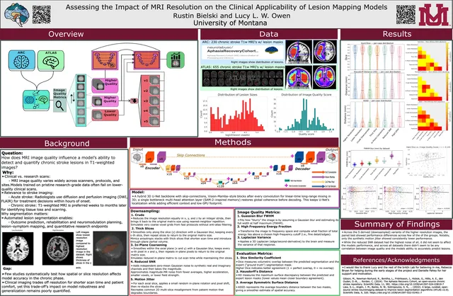
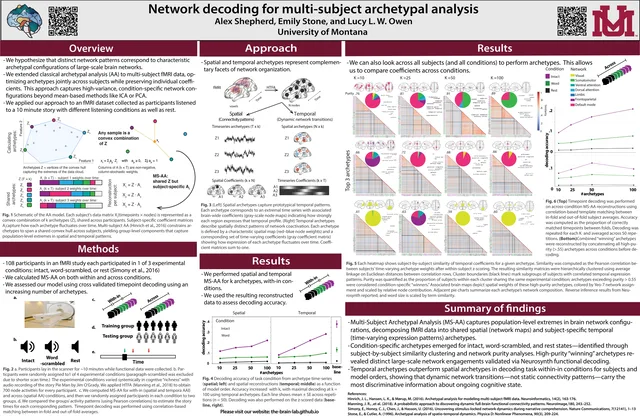
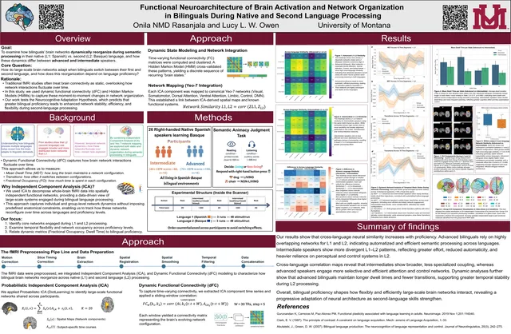
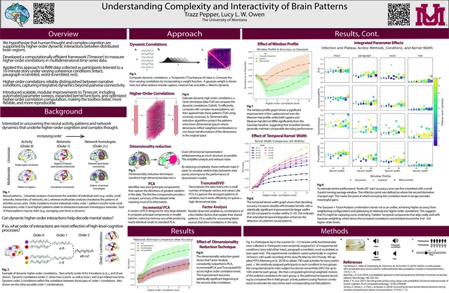
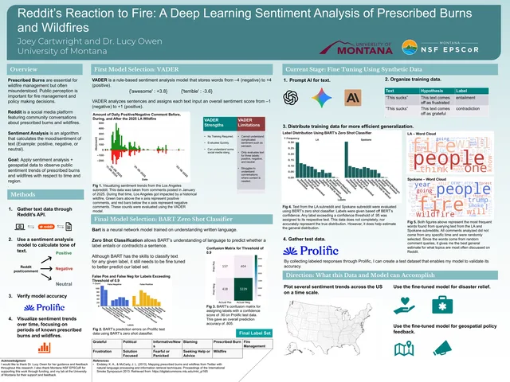

Download PDFObserving the impact of MRI resolution on the accuracy of detecting chronic stroke lesions.

Download PDFNetwork decoding using archetypal analysis.

Download PDFObserving brain activation patterns during first language and second language processing.

Download PDFObserving higher order correlations using the pieman dataset.

Download PDFUsing sentiment analysis to examine social media reactions to prescribed burns and wildfires.